Diskalkuli riski taşıyan çocuklar için kanıta dayalı, oyun görünümlü bir matematik müdahalesi
GalakSay, 5–10 yaş çocuklarının sayma, büyüklük karşılaştırma, sayı doğrusu ve işlem becerilerini Clements–Sarama öğrenme yörüngeleri boyunca adım adım geliştirir. Her yanıt anlık ve açıklayıcı geri bildirim alır; zorluk çocuğa göre ayarlanır; öğretmen ilerlemeyi veriyle izler.
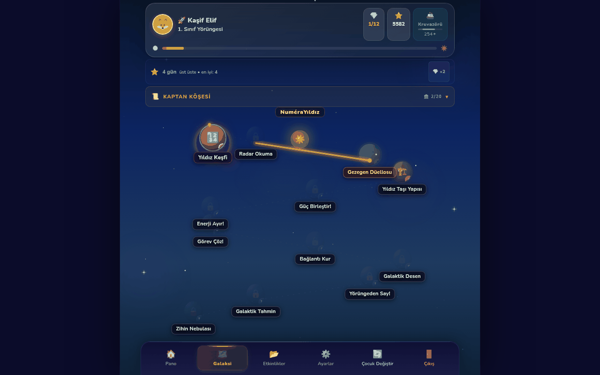
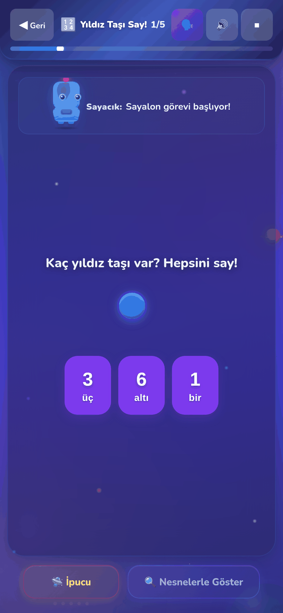
9 gezegen65 görev modu
5 seviyeuyarlanabilir zorluk
TR · KUTürkçe ve Kurmancî sesli yönerge
Cihazdaveriler cihazda, çevrimdışı PWA
Öğrenme yörüngeleri · hataya özgü somut–görsel–sembolik ipuçları · uyarlanabilir zorluk · veri temelli öğretmen izlemesi · MEB 2024 öğrenme çıktılarıyla eşleme · tamamen tarayıcıda, kurulum ve mağaza gerekmez.
Öğretmenler
Sınıf paneli, PDF sınıf raporu, CSV; NuMap hesabı ya da yerel hesap; MEB 2024 kodlarıyla etiketli beceriler.
Ebeveynler
Evde kısa, düzenli oturumlar; sesli yönergelerle okuma bilmeyen çocuk da bağımsız oynar; ceza ve zaman baskısı yok.
Uzmanlar ve araştırmacılar
Belgelenmiş yörünge eşlemesi, madde düzeyinde kayıt, anonim CSV; pilot ve iş birliklerine açık.
Tanıtım Kitapçığı · Eylül 2026Prof. Dr. Yılmaz Mutlu — Muş Alparslan Üniversitesi, Matematik Eğitimi Tasarım ve geliştirme · Her Çocuk Matematik Öğrenebilir platformu
Her 100 çocuktan 3–7'si — ve doğru tasarlanmış müdahale işe yarar
Her 100 çocuktan yaklaşık 3–7'si, zekâ ve çabadan bağımsız olarak sayıları ve nicelikleri işlemede kalıcı güçlük yaşar; buna matematik öğrenme güçlüğü ya da gelişimsel diskalkuli denir[1, 2]. Bu çocuklar sayı adı ile nicelik arasındaki bağı kurmakta, iki sayıdan hangisinin büyük olduğunu hızla söylemekte ve zihinsel sayı doğrusunu kullanmakta zorlanır[3, 4]. İyi haber şu: erken ve doğru tasarlanmış müdahaleler işe yarar.
%3–7
Okul çağı çocuklarında gelişimsel diskalkuli yaygınlığı; disleksi kadar yaygın. [1] [2]
d = 0,83
Matematik güçlüğü olan çocuklara yönelik yapılandırılmış müdahalelerin ortalama etkisi (35 çalışma). [5]
ES = 0,55
Dijital müdahalelerin etkisi: 15 randomize kontrollü çalışma, 1.073 çocuk. Belirleyici olan oyun formatı değil, öğretim tasarımı. [6]
0,49 vs 0,05
Bilgisayar ortamında açıklayıcı geri bildirimin etkisi, yalnızca "doğru/yanlış" bildirimine karşı. [12]
Bu sayılar GalakSay'a değil, dayandığı araştırma literatürüne aittir. Ayrıca: diskalkulik çocuklarda yüksek matematik kaygısı tipik akranlarına göre 2 kat daha olası (1.757 çocuk)[14]; uyarlanabilir sayı doğrusu yazılımıyla 42 oturum × 20 dakikalık dozun kazanımları üç ay sonra da korunmuştur (RKÇ)[11].
Literatür ne söylüyor?
35 kontrollü çalışmayı birleştiren bir meta-analiz, matematik güçlüğü olan çocuklara yönelik yapılandırılmış müdahalelerin büyük bir etki ürettiğini (d = 0,83) ve bilgisayar üzerinden verilen müdahalelerin yüz yüze olanlar kadar etkili olduğunu bildirmiştir[5]. Yalnızca dijital müdahaleleri inceleyen 15 randomize kontrollü çalışmanın meta-analizi de (1.073 çocuk) orta–büyük düzeyde bir etki (ES = 0,55) bulmuştur; bu çalışma, "oyunlaştırma"nın tek başına ek yarar sağlamadığını, önemli olanın öğretim tasarımı olduğunu göstermektedir[6].
ABD Eğitim Bilimleri Enstitüsü'nün (IES/What Works Clearinghouse) 2021 tarihli uygulama kılavuzu, matematikte zorlanan ilkokul öğrencileri için altı öneri sıralar ve altısı da "güçlü kanıt" düzeyindedir: sistematik öğretim, açık matematik dili, somut ve yarı-somut temsiller, sayı doğrusu, sözel problemler ve kısa zamanlı akıcılık etkinlikleri[7]. Açık öğretim, öğrenme güçlüğü olan öğrencilerde en büyük etkiyi (g = 1,22) üreten bileşendir[8]. Türkiye'de yürütülen çalışmalar da, matematik güçlüğü riski taşıyan ilkokul öğrencilerinin temel sayı işleme görevlerinde belirgin geride kaldığını ve sayı hissine yönelik kısa süreli programların etkili olabildiğini göstermektedir[3, 17].
GalakSay'ın iddiası
GalakSay bir oyun değil, oyun görünümlü bir öğretim programıdır. Uzay macerası, bu öğretim tasarımının çocuk diline çevirisidir. Her bileşen, uygulama düzeyinde doğrulanabilir bir ilkeye karşılık gelir:
Öğrenme yörüngeleri: 9 gezegen ve 65 görev modu, Clements–Sarama gelişimsel sırasını izler[18, 19].
Somut → görsel → sembolik ipuçları ve üçlü kod (nicelik – rakam – sayı adı)[4, 7].
Sayı doğrusu ve büyüklük karşılaştırma çekirdekte[9, 10].
Anlık, hataya özgü geri bildirim; ceza ve olumsuz ses yok[12, 14].
Uyarlanabilir zorluk ve yalnızca öğrenilmiş becerilerde kısa akıcılık çalışması[7, 13].
GalakSay tanı koymaz; tarama ve ilerleme verisi uzman değerlendirmesinin yerine geçmez. "Hafıza eğitimi" ya da "diskalkuliye özel yazı tipi" gibi kanıtı zayıf iddialar taşımaz; erişilebilirlikte WCAG ölçütleri esas alınır. GalakSay'ın kendi etkililiğine ilişkin kontrollü bir çalışma henüz yayımlanmamıştır; uygulama, araştırma iş birliklerine açıktır.
Nasıl çalışır
Taramadan rapora üç adım
GalakSay tek başına da kullanılabilir; NuMap tarama profiliyle birlikte kullanıldığında çocuğun başlangıç noktasını ve izleme döngüsünü tamamlar. Öğretmen ya da uzman için iki kapı vardır: NuMap hesabı ya da cihazdaki yerel hesap.
1
Tarama ve profil
Öğretmen ya da uzman, çocuğu NuMap ile tarar ya da cihazda yerel bir profil açar. Risk düzeyi ve yaş grubu (okul öncesi, 1. veya 2. sınıf), oyunun başlangıç seviyesini ve görsel destek düzeyini belirler.
NuMap hesabıyla tek oturum açma
2
Kişiselleştirilmiş görev haritası
Her görev bir öğrenme yörüngesi düzeyine eşlenir. Çocuk galaksi haritasında ilerlerken zorluk, sayı aralığı ve görsel destek performansa göre ayarlanır; hata türüne özgü ipuçları somut–görsel–sembolik sırayla açılır.
65 görev modu · 5 zorluk seviyesi
3
İzleme ve rapor
Sınıf paneli her çocuğun oturumlarını, doğruluk oranını, doz ilerlemesini ve yörünge düzeyini gösterir. PDF sınıf raporu ve CSV dışa aktarımı; rıza verilmişse NuMap paneline eşitleme.
PDF · CSV · anonim CSV
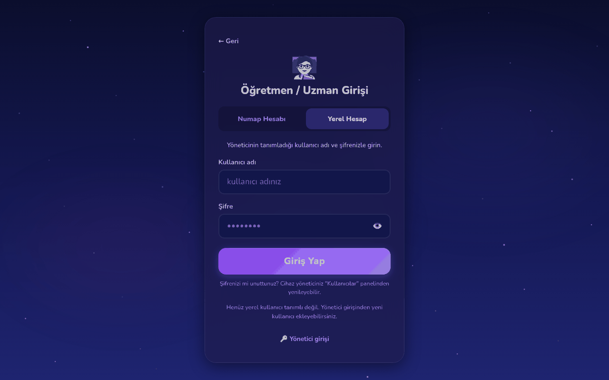
Öğretmen / Uzman girişiNuMap hesabı ya da yerel hesap; paylaşılan okul cihazında yönetici PIN'iGalaksi haritasıYörünge boyunca açılan görev düğümleri; bir üst düzey, alt düzeyde %60 başarı olmadan açılmaz
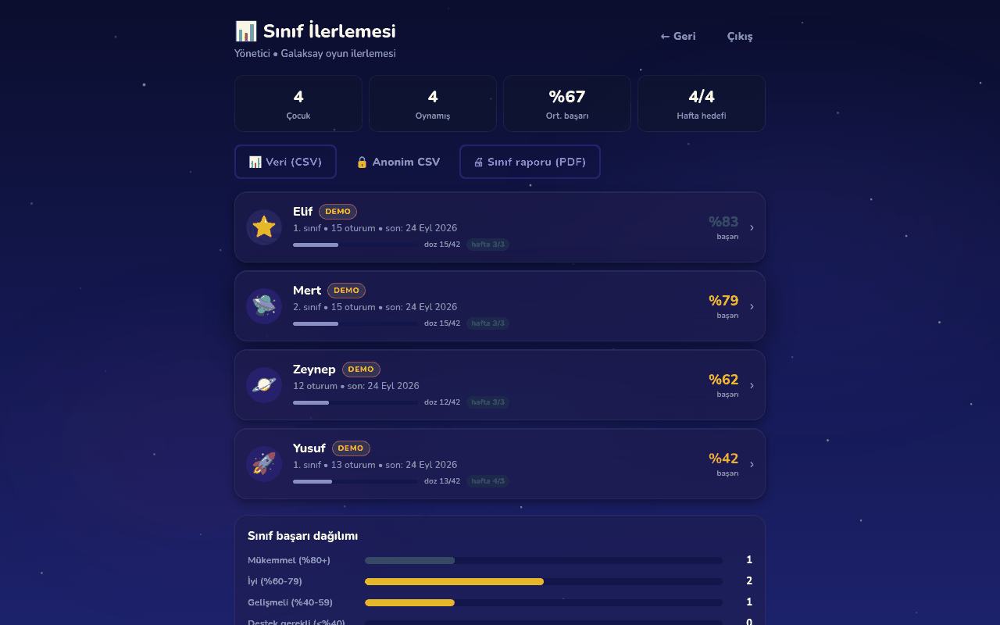
Sınıf İlerlemesiDört demo öğrenci; doz 42 oturum hedefi ve haftalık uyum çubuğu
Dokuz gezegen, dokuz öğrenme yörüngesi
Gezegen
Alan
Örnek görevler (65 modun bir bölümü)
🌍 Sayalon
Sayma
Birebir eşleme, sıra sayısı, geri sayma, onluk geçidi, ritmik sayma, sayı korunumu
⚡ Şimşeron
Şipşak sayılama (subitizing)
Bir bakışta miktar, beşli ve onlu çerçeve, çift onlu çerçeve, tahmin
⚖️ Terazya
Karşılaştırma ve sıralama
Az–çok–eşit, komşu sayılar, sıralama, sayı doğrusunda konum ve yerleştirme
🧱 Bileşya
Sayı bileşimi
5 ve 10 yapma, parça–bütün, sayı içindeki sayılar, çubuk bölme
🏛️ Basamara
Basamak değeri
Onluk–birlik, sayı kurma, genişletilmiş yazım, onluk yapma
🌗 Toplarya
Toplama ve çıkarma
Birleştirme–ayırma, büyükten sayma, fark, ters işlem, sözel problemler
✖️ Çarpanya
Çarpma ve bölme
Tekrarlı toplama, dizi modeli, kat kavramı, eşit paylaştırma, yarım–iki kat
🧩 Örünya
Örüntü ve eşitlik
Tekrarlayan ve büyüyen örüntüler, eksik sayı, denklem dengesi
🍕 Kesirya
Kesir
Kesirleri görsel olarak karşılaştırma
Çocuğun yolculuğu
Hikâye, harita, görev, geri bildirim, ipucu
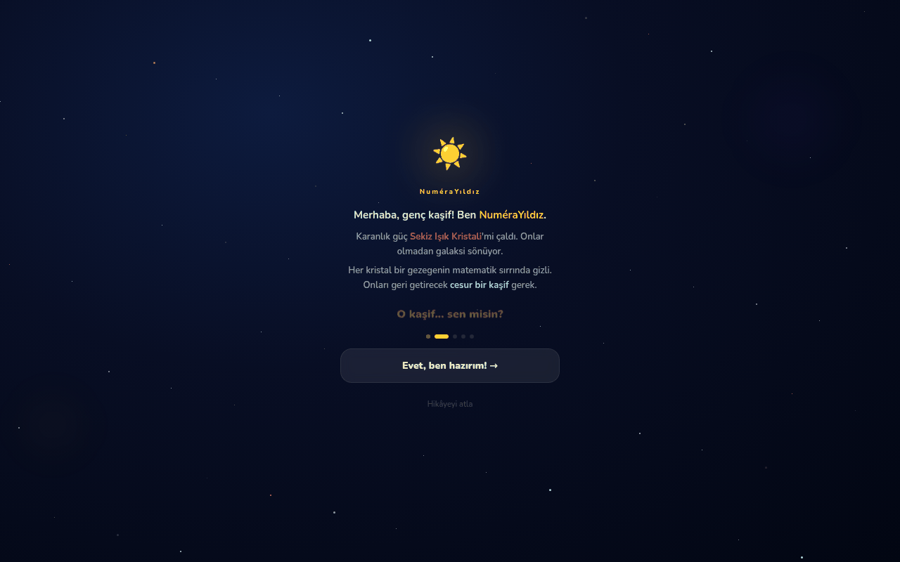
1 · Kısa hikâyeSekiz Işık Kristali çalınmıştır; her kristal bir gezegenin matematik sırrında gizlidir. Hikâye atlanabilir, sesli okunur.
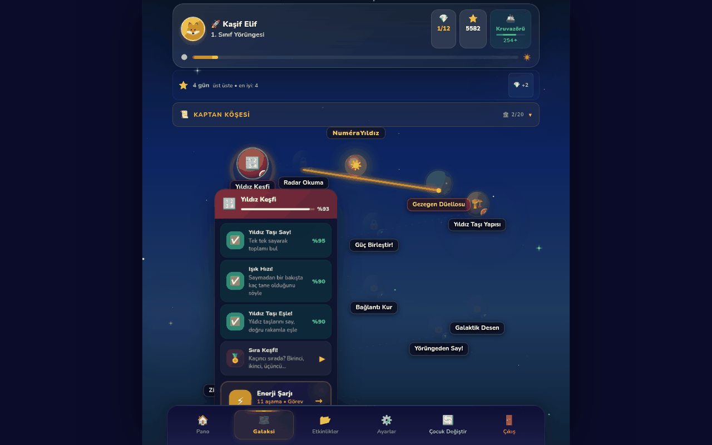
2 · Gezegen ve görevlerHer gezegende görevler yörünge düzeyi sırasında açılır; tamamlananlar işaretlenir, sıradaki görev öne çıkar.
4 · Soru: tek uyarıcı, üç seçenekSoru sesli okunur; seçenekler rakam ve sayı adıyla birlikte gösterilir (üçlü kod: nicelik – rakam – sayı adı)[4]. Ekranda tek görev, tek yönerge.
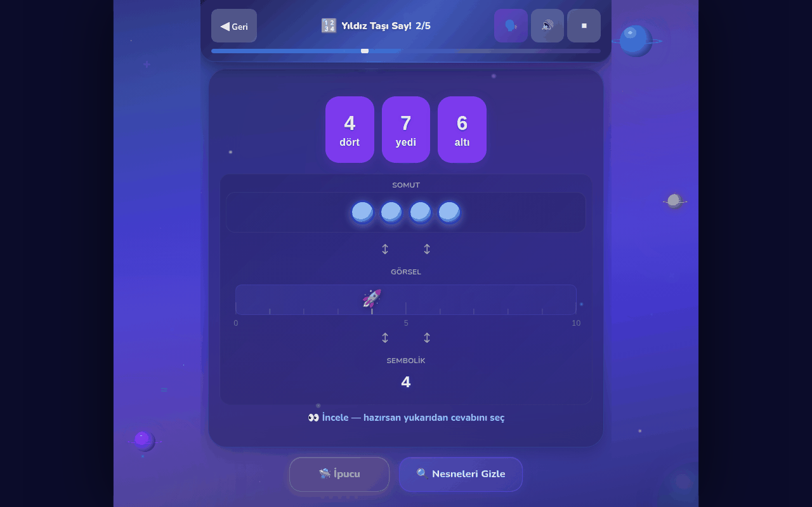
6 · "Nesnelerle Göster"Aynı sayı üç katmanda: somut nesneler, sayı doğrusu, sembol.
5 · Hataya özgü geri bildirim"Doğru sayı: 1 — her taşı tek tek say, hiçbirini atlama." Turuncu şerit doğru cevabı ve stratejiyi açıklar; hata tipi (birim sayma, işlem karışıklığı, büyüklük algısı…) kaydedilir. Ceza ve olumsuz ses yoktur[12, 14].
Beş kademeli ipucu sistemi (somut → görsel → sembolik)
İpucu cevabı vermez, düşünmeyi yönlendirir; kullanmak puan düşürmez. 1 Yönlendirici soru ("Baştan saysan kaça ulaşırsın?") · 2 Görsel vurgulama · 3 Kısmi animasyon (ilk adımlar birlikte) · 4 Tam animasyon (üç temsil eşzamanlı) · 5 Somut deneyim (yönlendirilmiş sürükle-bırak). CRA dizisi ve temsiller IES/WWC 2021 kılavuzunda "güçlü kanıt" düzeyindedir[7]; ipucu kademesi öğretmen raporunda bir gösterge olarak izlenir.
Uyarlanabilir zorluk · akıcılık · kaygıya duyarlı tasarım
Çocuğun %70–80 başarı bandında kalması için
Zorluk, çocuğun performansına göre sayısal mesafe, sayı aralığı ve görsel destek boyutlarında otomatik ayarlanır; bu yaklaşım, diskalkuliye yönelik ilk uyarlanabilir yazılımlardan bu yana kullanılan bir tasarım ilkesidir[13]. Hız baskısı ana akışta yoktur; kısa akıcılık çalışması yalnızca öğrenilmiş becerilerde açılır[7].
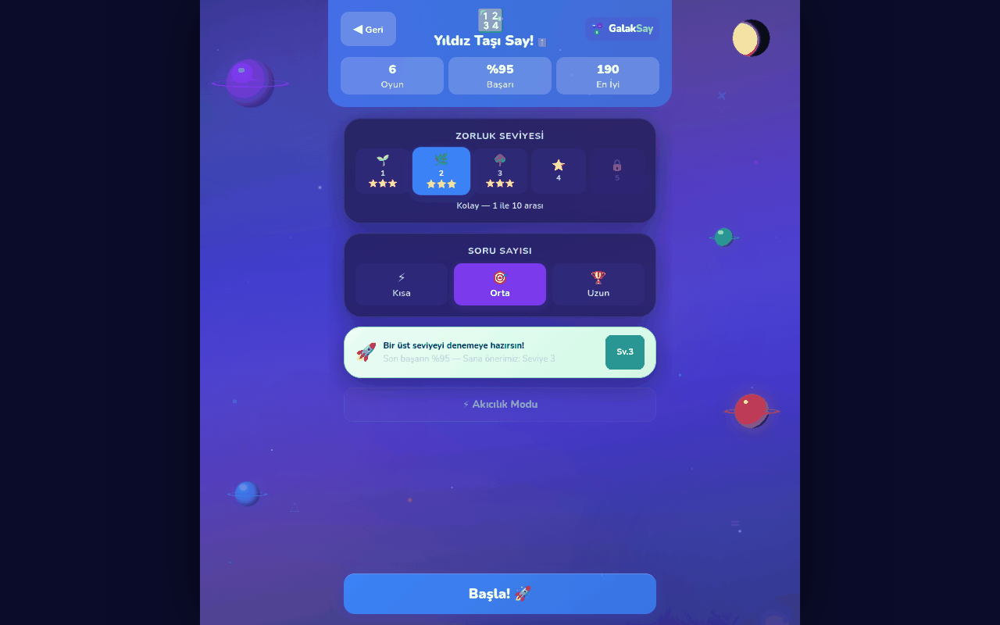
Seviye seçimiBeş seviye; bir üst seviye için bu seviyede %60+ başarı gerekir. Son başarıya göre "Sana önerimiz: Seviye 3" kartı; Akıcılık Modu ayrı bir seçenektir.
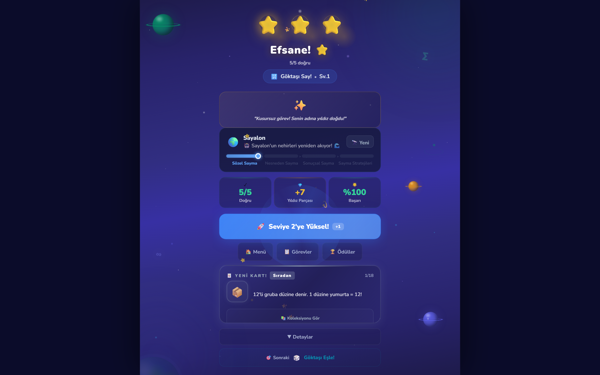
Görev sonucuYıldızlar, Sayalon yörüngesindeki konum (Sözel Sayma → Nesne Sayma → Kardinal Sayma → Sayma Stratejileri), "Seviye 3'e Yüksel" çağrısı ve tekrar çalışılacak sorular.
Beş zorluk seviyesi
1 Başlangıç
1–5
2 Kolay
1–10
3 Orta
…15
4 Zor
…20
5 Usta
yakın çeldiriciler, onluk geçişleri
Sınıf düzeyi başlangıç seviyesini kalibre eder; NuMap risk profili varsa başlangıç seviyesi ve somut temsil desteği ondan alınır.
Mikro-adaptasyon ve akıcılık
Son yanıtların doğruluğu ve süresine göre çeldirici yakınlığı ve sayı aralığı ayarlanır; görsel destek ustalaştıkça geri çekilir.
Yanlış yapılan maddeler oturum içinde yeniden sorulur; sonuç ekranı "tekrar çalışılacak" soruları listeler.
Akıcılık Modu: kısa, zamanlı alıştırma; yalnızca öğrenilmiş becerilerde, okul öncesinde kapalı[7].
Kaygıya duyarlı tasarım
Diskalkulik çocuklarda yüksek matematik kaygısı iki kat daha yaygındır[14]: ceza yok, olumsuz ses yok, hata "tekrar deneme" fırsatı.
Hayal kırıklığı algılama (ardışık hata, yanıt süresi örüntüsü) → çeldirici eleme ve rehber karakterden süreç odaklı destek.
Ödüller öğrenme eylemine bağlı ve mütevazı; rastgele büyük ödül yok.
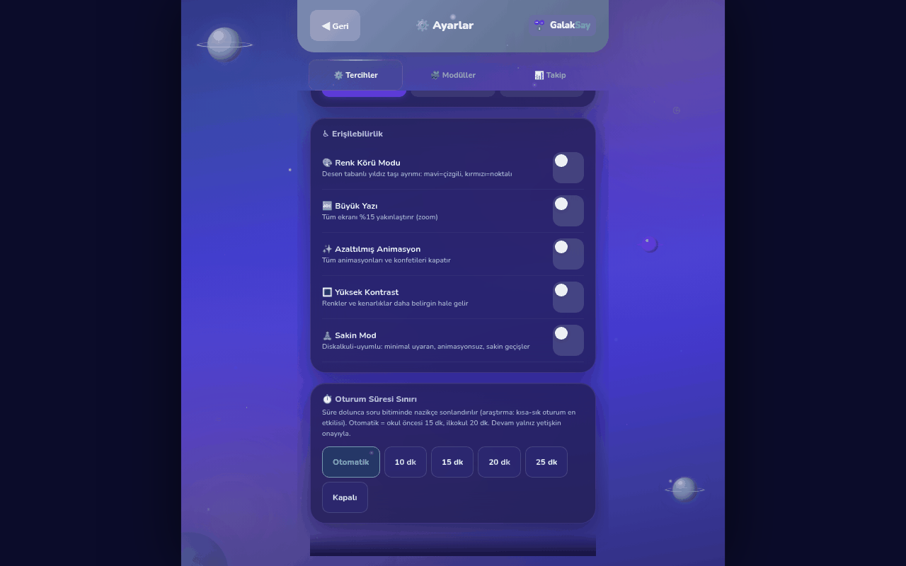
Oturum süresi sınırıOtomatik: okul öncesi 15 dk, ilkokul 20 dk; süre dolunca soru bitiminde nazikçe sonlandırılır, devam yalnız yetişkin onayıyla. Mola hatırlatıcısı korunur.
Önerilen kullanım dozu
Haftada 3–5 oturum, oturum başına 15–20 dakika. Uyarlanabilir sayı doğrusu yazılımıyla yürütülen bir randomize kontrollü çalışmada 42 oturum × 20 dakikalık doz, diskalkulik çocuklarda aritmetik ve sayı doğrusu becerilerini üç ay sonra da kalıcı olacak biçimde iyileştirmiştir[11]. Doğrusal sayı tahtası oyunlarının yaklaşık bir saatlik toplam oynamayla bile okul öncesi çocukların sayı bilgisini geliştirdiği gösterilmiştir[9].
GalakSay bu nedenle 42 oturumluk bir doz hedefi tutar: sınıf paneli ve gelişim paneli her çocuk için tamamlanan oturumu, toplam dakikayı ve haftalık uyumu gösterir. Oturumlar 5, 10 ya da 15 soruluk paketlerdir.
Öğretmen panosu ve raporlar
Sınıfı bir panelden izleyin, çocuğu bir raporda görün
Erken sayı becerileri için geliştirilmiş kısa müfredata dayalı ölçümlerden[15] esinlenen göstergeler: doğruluk, yanıt süresi, ipucu kademesi, hata profili, öğrenme yörüngesi düzeyi ve doz. Veriler cihazda kalır; rıza verilmişse NuMap paneline işlenir.
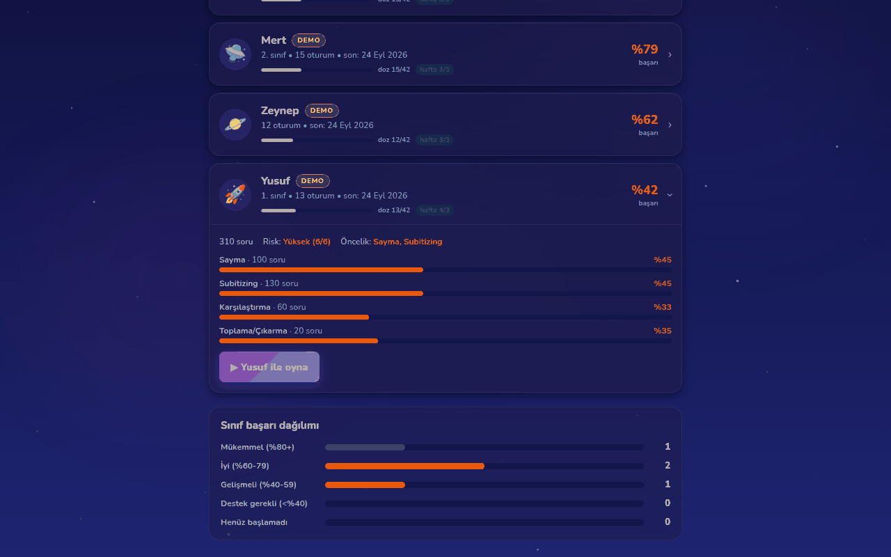
Sınıf İlerlemesi — öğrenci satırıYusuf (demo, diskalkuli risk profili): 310 soru, risk yüksek (6/6), öncelik sayma ve şipşak sayılama; alan bazlı doğruluk çubukları ve sınıf başarı dağılımı.
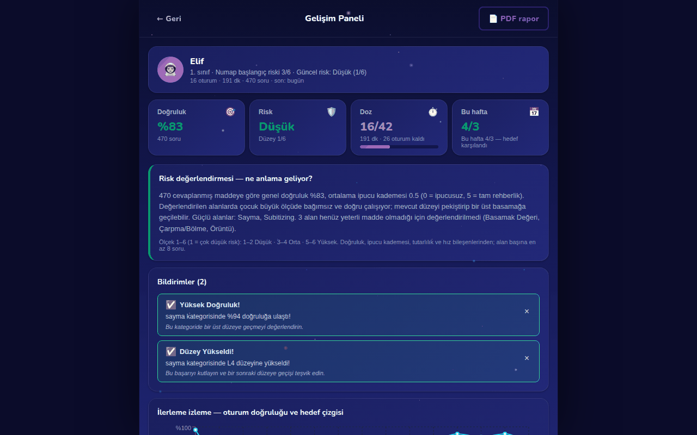
Gelişim PaneliElif (demo): doğruluk %83, risk düşük (1/6), doz 16/42, bu hafta 4/3; risk değerlendirmesinin sade dille açıklaması ve bildirimler.
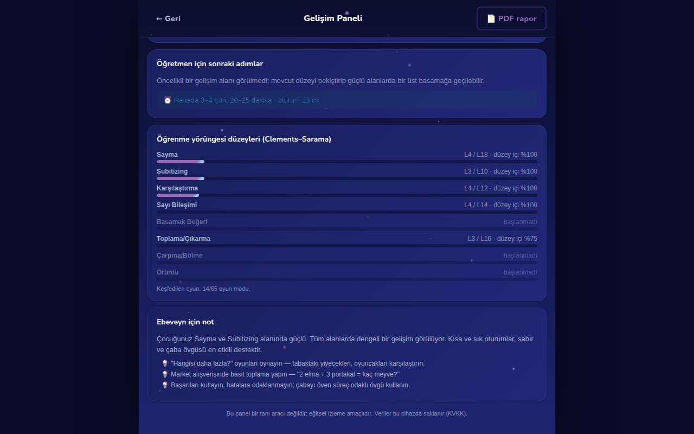
Yörünge düzeyleri ve sonraki adımlarSekiz alan için Clements–Sarama düzeyi (örn. Sayma L4/L18), öğretmen için somut sonraki adım ve doz önerisi, ebeveyn için suçlamayan, süreç odaklı not.
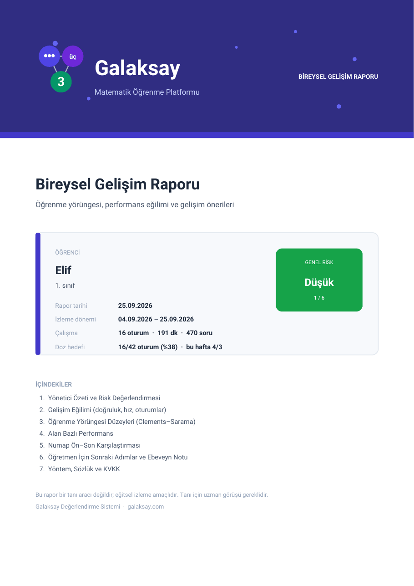
Bireysel Gelişim Raporu (PDF)Yönetici özeti, gelişim eğilimi, yörünge düzeyleri, alan bazlı performans, NuMap ön–son karşılaştırması, sonraki adımlar, yöntem ve KVKK notu.
Dışa aktarım
Sınıf raporu (PDF): sınıf geneli performans, risk dağılımı ve müdahale etkisi.
Veri (CSV) ve anonim CSV: oturum ve madde düzeyinde kayıt; anonim sürümde ad ve doğum tarihi çıkarılır, takma kimlik kalır.
MEB 2024 eşlemesi
Her görev modu, Türkiye Yüzyılı Maarif Modeli'nin öğrenme çıktılarıyla etiketlidir[16]: okul öncesi matematik alan becerileri (MAB.1–9) ve 1. sınıf "Sayılar ve Nicelikler" ile "İşlemlerden Cebirsel Düşünmeye" çıktıları (MAT.1.1.1–MAT.1.2.4). Rapor, çalışılan becerileri bu kodlarla listeler.
Risk göstergesi ve doz önerisi
Risk düzeyi (1–6) doğruluk, ipucu kademesi, tutarlılık ve hız bileşenlerinden, alan başına en az 8 soruyla hesaplanır; birden fazla gösterge birleştiğinde "uzman görüşü alınması önerilir" uyarısı verilir. Bu bir tanı değildir. Panel, çocuğa özel oturum sıklığı ve süresi önerir (örn. haftada 3–4 gün, 20–25 dk).
Dil · erişilebilirlik · KVKK
Her çocuğa, kendi dilinde, her cihazda
Türkçe ve Kürtçe (Kurmancî)
Arayüz, gezegen adları, görevler, hikâyeler, sözel problemler ve sesli yönergeler iki dilde. Ana dili Kürtçe olan çocuklar sayı adlarını kendi dillerinde duyar; Kürtçe için ayrı bir ses paketi vardır ve ilk kullanımda cihaza iner. Öğren modülünün bazı adımları Türkçeye düşer.
Okuma bilmeyen çocuk için
Soru kökleri, yönergeler ve geri bildirimler seslendirilir; seçenekler rakam ve sayı adıyla birlikte gösterilir; her ekranda "soruyu dinle" düğmesi vardır. Okul öncesi profilinde akış metinsiz yürütülebilir.
Erişilebilirlik
Dokunma hedefleri en az 44 px; büyük motor hareketler, küçük sürgü yok.
Büyük yazı, yüksek kontrast, azaltılmış animasyon ve "sakin mod" (minimal uyaran, sakin geçişler).
Renk körü modu: yıldız taşları desenle ayrılır; renk tek başına anlam taşımaz.
Ekran okuyucu için sayfa başlıkları, canlı bölgeler ve erişilebilir ad; klavye desteği.
Yazı tipleri (Nunito, Atkinson Hyperlegible) uygulamanın kendi sunucusundan; üçüncü tarafa istek yok.
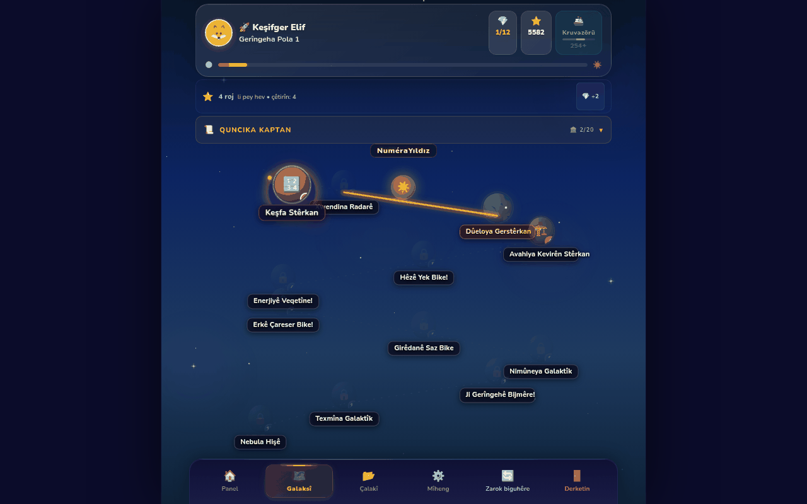
Kurmancî arayüz"Keşifger Elif — Gerîngeha Pola 1": gezegenler, görevler ve alt çubuk Kürtçe.Erişilebilirlik ayarlarıRenk körü modu, büyük yazı, azaltılmış animasyon, yüksek kontrast, sakin mod; ayarlara ebeveyn kapısıyla erişilir.
KVKK: veriler cihazda
Kimlik verisi toplanmaz; çocuk takma adla kaydolur, isteğe bağlı 4 haneli PIN hash'lenerek saklanır (PBKDF2), düz metin tutulmaz.
İlerleme cihazda (tarayıcı depolamasında) tutulur; NuMap'e ve platform havuzuna eşitleme yalnızca öğretmen/uzman hesabı ve açık rıza ile yapılır, Ayarlar'dan kapatılabilir.
"Verileri sil" çocuğa ait tüm kayıtları tek dokunuşla temizler.
Sayfa çerez, izleyici ya da üçüncü taraf betik içermez.
Çevrimdışı çalışan PWA
Uygulama mağazası gerekmez: galaksay.com/oyna adresini açmak yeterli.
"Ana ekrana ekle" ile uygulama gibi kurulur; bir kez açıldıktan sonra internet olmadan da çalışır.
Telefon, tablet ve bilgisayarda; yatay tablet ve projeksiyon için uygun düzen.
Ücretsiz ve reklamsız.
Yetişkin alanları korunur
Ayarlar ve hesap işlemleri ebeveyn kapısının (yaşa uygun olmayan bir aritmetik sorusu) arkasındadır.
Paylaşılan okul cihazında yönetim alanı yönetici PIN'i ile korunur; öğretmen/uzman kullanıcıları yönetici tanımlar.
Demo sınıfı (Elif, Yusuf, Zeynep, Mert) tek dokunuşla yüklenir ve iz bırakmadan kaldırılır; gerçek verilerle karışmaz.
Platform
Her Çocuk Matematik Öğrenebilir: tarama, somut materyal, dijital müdahale
GalakSay, Her Çocuk Matematik Öğrenebilir platformunun oyunlaştırılmış dijital müdahale ayağıdır. Tarama ve profil NuMap'ten, somut materyal DokunSay'dan gelir; GalakSay'daki enerji kapsülü, pul ve yıldız taşı gibi nesneler DokunSay materyallerinin dijital karşılıklarıdır.
NuMap
getnumap.com · tarama ve değerlendirme
Risk düzeyi ve alan profili; öğretmen hesabı GalakSay'da geçerli, öğrenciler otomatik listelenir; oyun ilerlemesi NuMap paneline döner.
DokunSay
dokunsay.com · somut materyaller
Sayı kapsülleri, pullar ve çubuklar; sınıfta ve evde elle deneyim. Uygulamadaki "Materyal Rehberi" dijital nesneleri gerçek materyallerle eşler.
GalakSay
galaksay.com · dijital müdahale
Öğrenme yörüngeleri, hataya özgü CRA ipuçları, uyarlanabilir zorluk, öğretmen izlemesi ve raporlar; Türkçe ve Kürtçe.
Tarama → müdahale → izleme döngüsü
1 · NuMap'te tara
Risk düzeyi ve alan puanları; yaş grubu.
→
2 · GalakSay'da oyna
Başlangıç seviyesi ve görsel destek profile göre; haftada 3–5 kısa oturum.
NuMap zorunlu değildir: GalakSay yerel hesaplarla tek başına da eksiksiz çalışır; tipik gelişen çocuklarla da kullanılabilir.
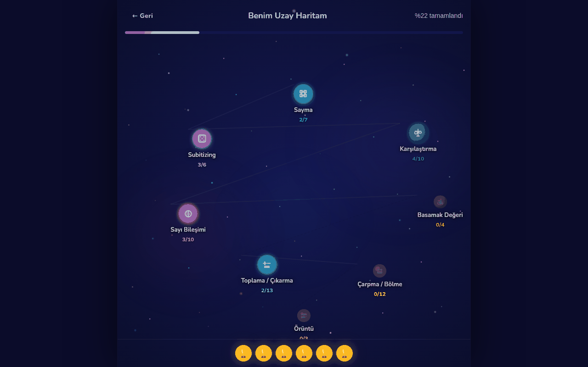
Benim Uzay HaritamÇocuğun sekiz alandaki ilerlemesi tek bakışta; öğretmen-çocuk panosundan erişilir.
Araştırmacılar ve pilot uygulamalar için
Her mod için yörünge, düzey ve yaş aralığı eşlemesi belgelidir.
Yanıt süresi, hata türü, ipucu kademesi ve akıcılık ölçütleri madde düzeyinde kaydedilir; anonim CSV ile kimlik verisi içermeyen veri seti.
Etkililik çalışması için gereken oturum bazlı veri üretilir; iş birliklerine açıktır.
QR kodu galaksay.com
İletişim
Prof. Dr. Yılmaz Mutlu Muş Alparslan Üniversitesi, Eğitim Fakültesi hercocukmatematikogrenebilir.com/yilmaz-mutlu galaksay.com · uygulama: galaksay.com/oyna Kurumsal e-posta adresi eklenecek.
Sık sorulan sorular
Hangi yaş grubu için?
Okul öncesi (5–6 yaş), 1. ve 2. sınıf için ayrı başlangıç yörüngeleri vardır; içerik 10 yaşına kadar kullanılabilir.
Tanı ya da NuMap taraması şart mı?
Hayır. Tipik gelişen çocuklarla da kullanılabilir; NuMap profili varsa başlangıç seviyesi ona göre kalibre edilir.
Etkililik çalışması var mı?
Henüz yayımlanmış bir GalakSay etki çalışması yoktur; tasarım bileşenleri meta-analizlere ve uygulama kılavuzlarına dayanır.
Kaynaklar
Kitapçıkta atıf yapılan çalışmalar
Bu kitapçıktaki bulgular yayımlanmış bağımsız araştırmalara aittir ve GalakSay'ın tasarım ilkelerini gerekçelendirir. Numaralar metindeki köşeli parantezli atıflara karşılık gelir. Ekran görüntülerindeki tüm öğrenci adları kurgusaldır (demo sınıfı).
Morsanyi, K., van Bers, B. M. C. W., McCormack, T., & McGourty, J. (2018). The prevalence of specific learning disorder in mathematics and comorbidity with other developmental disorders in primary school-age children. British Journal of Psychology, 109(4), 917–940. https://doi.org/10.1111/bjop.12322
Butterworth, B., Varma, S., & Laurillard, D. (2011). Dyscalculia: From brain to education. Science, 332(6033), 1049–1053. https://doi.org/10.1126/science.1201536
Olkun, S., Altun, A., Göçer Şahin, S., & Akkurt Denizli, Z. (2015). Deficits in basic number competencies may cause low numeracy in primary school children. Eğitim ve Bilim, 40(177), 141–159. https://doi.org/10.15390/EB.2015.3287
Chodura, S., Kuhn, J.-T., & Holling, H. (2015). Interventions for children with mathematical difficulties: A meta-analysis. Zeitschrift für Psychologie, 223(2), 129–144. https://doi.org/10.1027/2151-2604/a000211
Benavides-Varela, S., Zandonella Callegher, C., Fagiolini, B., Leo, I., Altoè, G., & Lucangeli, D. (2020). Effectiveness of digital-based interventions for children with mathematical learning difficulties: A meta-analysis. Computers & Education, 157, 103953. https://doi.org/10.1016/j.compedu.2020.103953
Fuchs, L. S., Newman-Gonchar, R., Schumacher, R., Dougherty, B., Bucka, N., Karp, K. S., Woodward, J., Clarke, B., Jordan, N. C., Gersten, R., Jayanthi, M., Keating, B., & Morgan, S. (2021). Assisting students struggling with mathematics: Intervention in the elementary grades (WWC 2021006). National Center for Education Evaluation and Regional Assistance, IES, U.S. Department of Education. https://ies.ed.gov/ncee/wwc/practiceguide/26
Gersten, R., Chard, D. J., Jayanthi, M., Baker, S. K., Morphy, P., & Flojo, J. (2009). Mathematics instruction for students with learning disabilities: A meta-analysis of instructional components. Review of Educational Research, 79(3), 1202–1242. https://doi.org/10.3102/0034654309334431
Siegler, R. S., & Ramani, G. B. (2009). Playing linear number board games—but not circular ones—improves low-income preschoolers' numerical understanding. Journal of Educational Psychology, 101(3), 545–560. https://doi.org/10.1037/a0014239
Schneider, M., Merz, S., Stricker, J., De Smedt, B., Torbeyns, J., Verschaffel, L., & Luwel, K. (2018). Associations of number line estimation with mathematical competence: A meta-analysis. Child Development, 89(5), 1467–1484. https://doi.org/10.1111/cdev.13068
Kohn, J., Rauscher, L., Kucian, K., Käser, T., Wyschkon, A., Esser, G., & von Aster, M. (2020). Efficacy of a computer-based learning program in children with developmental dyscalculia. What influences individual responsiveness? Frontiers in Psychology, 11, 1115. https://doi.org/10.3389/fpsyg.2020.01115
Van der Kleij, F. M., Feskens, R. C. W., & Eggen, T. J. H. M. (2015). Effects of feedback in a computer-based learning environment on students' learning outcomes: A meta-analysis. Review of Educational Research, 85(4), 475–511. https://doi.org/10.3102/0034654314564881
Wilson, A. J., Dehaene, S., Pinel, P., Revkin, S. K., Cohen, L., & Cohen, D. (2006). Principles underlying the design of "The Number Race", an adaptive computer game for remediation of dyscalculia. Behavioral and Brain Functions, 2, 19. https://doi.org/10.1186/1744-9081-2-19
Devine, A., Hill, F., Carey, E., & Szűcs, D. (2018). Cognitive and emotional math problems largely dissociate: Prevalence of developmental dyscalculia and mathematics anxiety. Journal of Educational Psychology, 110(3), 431–444. https://doi.org/10.1037/edu0000222
Clarke, B., & Shinn, M. R. (2004). A preliminary investigation into the identification and development of early mathematics curriculum-based measurement. School Psychology Review, 33(2), 234–248. https://doi.org/10.1080/02796015.2004.12086245
Mutlu, Y., & Akgün, L. (2020). Developing number sense in students with mathematics learning disability risk. International Online Journal of Primary Education, 9(1). https://www.iojpe.org/index.php/iojpe/article/view/24
Clements, D. H., & Sarama, J. (2008). Experimental evaluation of the effects of a research-based preschool mathematics curriculum. American Educational Research Journal, 45(2), 443–494. https://doi.org/10.3102/0002831207312908
Clements, D. H., Sarama, J., Spitler, M. E., Lange, A. A., & Wolfe, C. B. (2011). Mathematics learned by young children in an intervention based on learning trajectories: A large-scale cluster randomized trial. Journal for Research in Mathematics Education, 42(2), 127–166. https://doi.org/10.5951/jresematheduc.42.2.0127